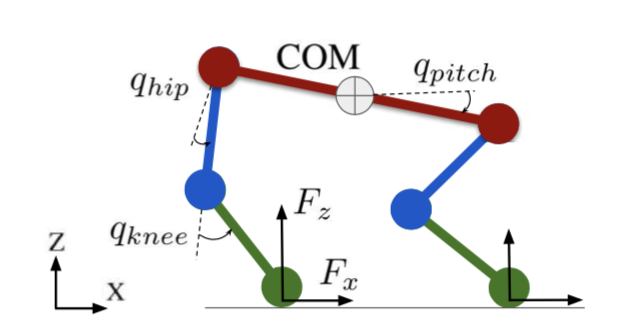
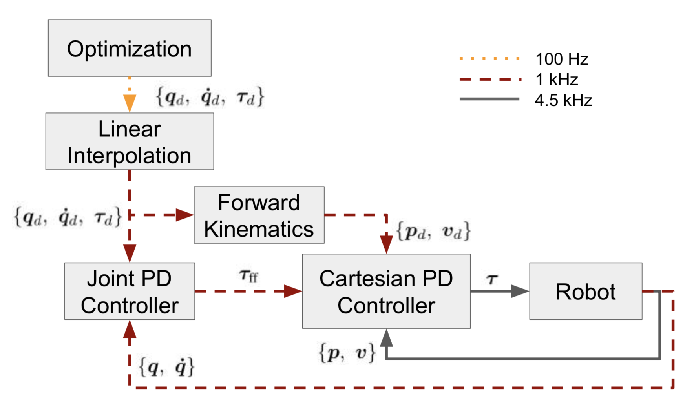

Quan Nguyen, Matthew. J. Powell, Benjamin Katz, Jaed Di Carlo, and Sangbae Kim. “Optimized Jumping on the MIT Cheetah 3 Robot.” IEEE International Conference on Robotics and Automation (ICRA), submitted, 2019.

System configuration $\boldsymbol{q}$ represents the position in the world frame ($x, z$) and the pose of the robot:
System dynamics:
where $B$ and $B_{\rm fric}$ define how the actuator torques $\boldsymbol{\tau}$ and the joint friction torque $\boldsymbol{\tau}_{\rm fric}$ enter the model.
Jumping motion contains four sequential phases for totally $N$ cycles with fixed sampling time $T = 10$ms:
- All-leg contact phase (0.5s)
- Rear-leg contact phase (0.5s)
- Flight phase (duration is task dependent)
- Landing phase
Trajectory Planner
The actuator torque $\boldsymbol{\tau}(t)$ that drives the robot to the desired configuration is not unique. Assume the jumping trajectory is in a vertical plane. Optimization is used to plan the desired joint torque for the jumping task. The purpose of the cost function is to guide the optimization to converge to a feasible solution.
where $\omega$ are some weights that need to be manually adjusted and $\boldsymbol{q}_{\rm ref}$ is a constant configuration. Following constraints are enforced in the optimization:
- System dynamics
- Joint angle limits, joint velocity limits, torque limits
- Friction cone limits
- Minimum ground reaction force $f_k^z > f_{\rm min}^z$ if in contact
- Initial and final configuration $x, z, \boldsymbol{q}$ (desired final posing $\boldsymbol{q}_N^d$ plays a crucial role in smooth landing)
- Pre-landing configuration: $\boldsymbol{q}_k = \boldsymbol{q}_N^d,\, \dot{\boldsymbol{q}}_k = \boldsymbol{0}$ for the last 0.4s (ensure a favorable landing configuration)
Jumping Controller

Desired joint angle $\boldsymbol{q}_d$, joint velocity $\dot{\boldsymbol{q}}_d$ and feed-forward joint torque $\boldsymbol{\tau}_d$ are known from the planner.
Linear interpolation of reference values to let controller running at 1kHz
PD controller @1kHz employed for regulation of joint angle and velocity
Cartesian PD controller @4.5kHz used to improve tracking performance
Landing Controller
- Significant pitch angle error due to the model mismatch between simulation and experiment
- Recovers the robot from unexpected landing configurations
- Contact detection based on the impact (any $\dot{q}_{\rm knee} \geq {\rm velocity\, threshold} $)
- Clarify between three different contact models:
- Front-leg contact, rear-leg contact and all-leg contact
Consider the Robot dynamics as a rigid body:
we want to find an optimal distribution of leg forces $F$ that eliminate configuration errors.
where $\require{color} \color{red} \boldsymbol{b}_d \color{black} = \begin{bmatrix} m( \color{blue} \ddot{\boldsymbol{p}}_{c,d} \color{black} + \boldsymbol{g}) \\ I_G \, \color{blue} \dot{\boldsymbol{\omega}}_{b,d} \color{black} \end{bmatrix}, \begin{bmatrix} \color{blue} \ddot{\boldsymbol{p}}_{c,d} \\ \color{blue} \dot{\boldsymbol{\omega}}_{b,d} \color{black} \end{bmatrix} =\begin{bmatrix} K_{p,p} (\boldsymbol{p}_{c,d} - \boldsymbol{p}_c) + K_{c, d} (\dot{\boldsymbol{p}}_{c, d} - \dot{\boldsymbol{p}}_{c}) \\ K_{p,\omega} \log (R_d R^\top ) + K_{d, \omega} (\boldsymbol{\omega}_{b, d} - \boldsymbol{\omega}) \end{bmatrix}$.
Note that the QP can be solved in real-time 1kHz and subjects to friction cone constraints. Swing legs have $F_{\rm swing} = 0$.
Substitute $F^*$ back to the system dynamics equation to get joint torque $\boldsymbol{\tau}$.